节奏、拍号与读谱：把时间切成格子
G1 解决了“弹哪里”，这一份解决“什么时候弹”。拍、小节、拍号、时值、细分，再到单拍子和复拍子、swing 和 shuffle、反拍和切分，最后学会读 TAB。这一份要开着节拍器读：第 3 节的节拍器和每个 ▶ 按钮都能出声。
标了 补充 的内容是讲义作者加的，OMT 里没有，主要是落到吉他上的部分：右手怎么扫、shuffle 怎么弹、TAB 怎么读。三连音的“trip-let”数法也是补充，OMT 的单拍子数法只到“1 e + a”。上面几章 OMT 的原文已经嵌进网站「本周」的每日页面里，中英对照。
1. 全局地图
左列是要掌握的概念（点击跳到对应小节），中列是一句话的核心事实，右列是它落到琴上的样子。①～⑤ 是“怎么把时间切开”，⑥～⑧ 是“切开以后怎么让它有律动”，⑨ 是吉他手最常读的谱。
三条横向联系：
- 一切都是“一分为二”或“一分为三”。时值一级一级减半（③），单拍子每拍分两份（⑤），复拍子每拍分三份（⑥），swing 是把两份弹成接近三份里的“2+1”（⑦）。
- 拍号决定重音落在哪。3/4 和 6/8 每小节都是 6 个八分音符，区别只在怎么分组、重音在哪（②⑥）。反拍和切分（⑧）都是在这个重音格子上故意“错位”。
- TAB 只告诉你位置，节奏要靠前八个概念自己补。很多 TAB 不写节奏，所以⑨放在最后。
2. 逐个概念
① 拍与速度
- 是什么
- 拍是音乐里有规律地反复出现的脉动，听歌时你跟着点脚、拍手的就是拍（OMT 用 Postmodern Jukebox 翻唱的“Wannabe”举例，从 0:11 开始很容易跟着拍）。补充 拍的快慢叫速度，用 BPM（每分钟几拍）表示：60 BPM 就是一秒一拍。
- 为什么需要
- 后面所有的东西——小节、时值、细分、切分——都是在拍这把“尺子”上量出来的。尺子不稳，量什么都不准。
- 在琴上
- 补充 练琴时拍由节拍器给，脚跟着点，嘴里数，手跟着弹。先在慢速下稳住，再加速，每次加 5～10 BPM。
- 常见误解
- “节拍器会让人弹得死板，熟练了就不用了。”节拍器练的是内心的拍子。录音、合奏、跟鼓手配合，都要求你心里有一个稳定的拍。
② 小节与拍号
- 是什么
- 拍会自然地两个、三个或四个一组，分别叫二拍子、三拍子、四拍子。一组拍记成一个小节，小节之间用小节线隔开。单拍子的拍号上下两个数字：上面是每小节几拍，下面是以什么音符为一拍（2 = 二分音符，4 = 四分音符，8 = 八分音符）。4/4 也写成 𝄴（common time），2/2 也写成 𝄵（cut time）。（OMT Simple Meter → Time Signatures）
- 为什么需要
- 拍号告诉你重音的格局：4/4 数“1 2 3 4”，1 拍最重；3/4 数“1 2 3”，像华尔兹。不先看拍号，就不知道该从哪儿数“1”。
- 听起来
- 重音（高音的滴）落在每小节第 1 拍。
- 常见误解
- “4/4 是一个分数，等于 1。”OMT 专门强调：拍号不是分数，两个数字之间没有横线，上下两个数字说的是两件不同的事。
③ 时值：音符和休止符
- 是什么
- 时值是分层级的，每一级都是上一级的一半：全音符 = 2 个二分音符 = 4 个四分音符 = 8 个八分音符 = 16 个十六分音符，就像一整张披萨切成两半、四份、八份（OMT 的比喻）。每种音符都有对应的休止符，表示同样长的不出声。三种让时值减半的办法：加符干（全 → 二分）、涂实符头（二分 → 四分）、加符尾（四分 → 八分 → 十六分）。（OMT Notating Rhythm）
- 为什么需要
- 拍号说“以四分音符为一拍”，你得知道四分音符多长、八分音符是它的一半，才能把谱上的符号换算成拍。
- 在琴上
- 在 4/4 里：全音符弹一下、按住 4 拍；四分音符每拍一下；八分音符每拍两下；十六分音符每拍四下。点下面的图听每一行。
-
每一行都是一个 4/4 小节。点一行，节拍器 60 BPM 下弹一遍这一行的时值。 -
音符 4/4 里占几拍 对应的休止符 英式叫法（OMT 列出） 全音符 4 全休止符：挂在第四线下面 semibreve 二分音符 2 二分休止符：坐在第三线上面，像一顶礼帽 minim 四分音符 1 四分休止符：弯折的竖线，OMT 提醒要多练着画 crotchet 八分音符 ½ 八分休止符：一个小钩 quaver 十六分音符 ¼ 十六分休止符：两个小钩 semiquaver - 常见误解
- “四分音符就是一拍。”只有下面的数字是 4 时才对。在 2/2 里一拍是二分音符，在 6/8 里一拍是附点四分音符（⑥）。
④ 附点与连音线
- 是什么
- 附点写在音符右边，把时值加上自己的一半：附点四分音符 = 3 个八分音符，附点二分音符 = 3 个四分音符。第二个附点再加上第一个附点的一半，复附点音符是原时值的 1¾ 倍。连音线是连接两个同音高音符的弧线，后一个音不重新发音，两个时值相加；休止符不用连音线。连接不同音高的弧线是圆滑线，意思完全不同。（OMT Notating Rhythm → Dots and ties）
- 为什么需要
- 只靠“每级减半”的时值，做不出三拍长的音，也做不出跨过小节线的音。附点解决前者，连音线两个都能解决。
- 在琴上
- 补充 连音线：弹一下，按住不再拨弦。吉他谱上连接不同音高的弧线，通常表示击弦（hammer-on）或勾弦（pull-off），也就是左手做出第二个音、右手不再拨。
- 听起来
- “附点四分 + 八分”是最常见的附点节奏，长–短，《生日快乐》开头的“祝你”就是附点八分 + 十六分。
- 常见误解
- “附点就是多加半拍。”附点加的是这个音符自己的一半：附点四分音符加半拍，附点二分音符加一拍，附点八分音符只加四分之一拍。
⑤ 细分与数法
- 是什么
- OMT 用美国传统数法：拍用数字“1 2 3 4”；一拍分成两份时，后半拍数“and”，写作 +（吉他教学里常写成 &）；再分成四份数“1 e + a”。持续好几拍的音、或者因为休止、连音线、附点而没发音的拍，数字写在括号里，不出声地数。以弱起音开始的曲子不从“1”数起，弱起被当作一个想象中的小节的最后几拍，最后一小节通常相应缩短。（OMT Simple Meter → Counting in Simple Meter）
- 补充 一拍分成三份（三连音）常数“1 trip let”。OMT 的单拍子数法里没有这一项。
- 为什么需要
- 细分是“拍与拍之间的尺子”。不数细分，八分和十六分的位置全靠蒙；数出来，每一个音都有确定的落点。
- 在琴上
- 补充 右手和细分对应：八分音符“下 上 下 上”，拍上向下扫、& 上向上扫；十六分音符每拍“下上下上”。右手一直按最小的细分摆动，没有音的地方空挥不碰弦，节奏就不会乱。
- 听起来
- 节拍器 60，同一个音按四种细分弹。
- 常见误解
- “慢的地方不用数。”长音最容易拖短或拉长。OMT 让你把没发音的拍也写进括号里数，就是为了这个。
⑥ 单拍子与复拍子
- 是什么
- 单拍子每拍分成两份、再细分成四份；复拍子每拍分成三份、再细分成六份。复拍子的拍号说的是分拍：上面的数字是每小节几个分拍，总是 3 的倍数，除以 3 就是拍数（6、9、12 对应二、三、四拍子）；下面的数字是分拍单位。所以 6/8 是每小节两拍，每拍是一个附点四分音符，等于三个八分音符。复拍子数“1 la li 2 la li”，再细分到十六分音符时加“ta”。（OMT Compound Meter）
- 为什么需要
- 3/4 和 6/8 每小节都是 6 个八分音符，写出来的音符可以一模一样，听起来却完全不同：3/4 是三拍、每拍两个八分（2+2+2），6/8 是两拍、每拍三个八分（3+3）。拍号错了，重音就全错了。
- 在琴上
- 补充 慢布鲁斯和很多慢摇滚抒情歌是 12/8：四大拍，每拍三个八分，“1 la li 2 la li 3 la li 4 la li”。
- 听起来
- 两个例子八分音符的速度完全一样，只有重音不同。
- 常见误解
- “6/8 就是每小节 6 拍。”6/8 是 6 个八分音符、两拍。跟着 6/8 的歌点脚，每小节只点两下。
⑦ 摇摆与 shuffle
- 是什么
- 摇摆八分音符（swing eighths）谱面写成普通的直八分，演奏时却弹成长–短，接近三连音，第一个大约是第二个的两倍长，比例从 1:1 变成约 2:1。之所以不直接写成三连音，是因为那样谱面太乱；演奏者看到风格标记就知道要摇摆。OMT 还提醒：2:1 只是常用的解释，实际比例因曲、因人而异，速度越快越接近直八分，越慢摇摆越明显。（OMT Swing Rhythms → The Basic Swing Groove）
- 为什么需要
- 布鲁斯、爵士、很多摇滚都靠这个“长–短”的律动。按谱面弹成直八分，音全对，味道全没了。
- 在琴上
- 补充 吉他手说的 shuffle，就是用摇摆八分弹的律动，最典型的是布鲁斯根音律动：6 弦空弦配 5 弦 2 品、4 品交替（E5–E6），每拍两个音，长–短。慢的 shuffle 常常直接写成 12/8，把三连音写出来。
- 听起来
- 同一条根音律动，先直后摇。
- 常见误解
- “swing 就是严格的三连音。”2:1 只是起点。快歌的摇摆更直，慢歌更“甩”。用第 3 节的摇摆滑块从 50% 拖到 75%，听比例怎么改变律动。
⑧ 重音、反拍与切分
- 是什么
- 4/4 里拍有轻重：第 1 拍最重，第 3 拍次之，第 2、4 拍最轻；换和弦这类“重要的事”通常发生在第 1 拍。切分就是用某种办法打破这种层级：把重音放到轻拍上，或者用休止符、连音线避开强拍。反拍重音（backbeat）是在第 2、4 拍上加重音，本身就是一种切分，和古典音乐通常重读 1、3 拍正好相反（OMT Swing Rhythms → Syncopation）。流行和摇滚里最常见的是直切分：一串等长的音，把第一个砍掉一半，后面每个都提前这一半，于是全落在反拍上。另一种常见的切分是 tresillo，把两拍分成 3+3+2 个十六分音符，像一个“假三连音”。（OMT Rhythm and Meter in Pop Music）
- 为什么需要
- 律动的推动力大多来自“不在拍上”的音。军鼓打 2、4 拍是几乎所有摇滚和流行的地基；riff 里提前半拍进来的音，是它听起来“往前冲”的原因。
- 在琴上
- 补充 扫弦时右手照样“下 上 下 上”地摆，切分的音只是落在向上扫的 & 上；在本来要扫的强拍上空挥不碰弦，切分就出来了。
- 听起来
- 常见误解
- “切分就是弹得不在拍上。”切分是有意地落在拍外，前提是心里的拍一点没乱。拍不稳的人弹出来的叫抢拍、拖拍，不叫切分。
⑨ 读 TAB
- 是什么
- 补充 TAB（六线谱）的 6 条横线就是 6 根弦，最上面一线是 1 弦（细的高音 E），最下面一线是 6 弦，正好和你低头看琴时上下相反。线上的数字是品，0 是空弦；上下对齐的几个数字同时弹。
- 为什么需要
- 大多数吉他谱都是 TAB，它直接告诉你在哪根弦哪一品，不用先把五线谱换算成指板位置。代价是：很多 TAB 只写位置，不写节奏。数字之间的距离不一定代表时值，有的连小节线都没有。
- 在琴上
- 下面是《生日快乐》的前两句，C 大调，3/4。红色一行是数拍，是讲义作者加上去的，普通 TAB 里没有。它从第 3 拍的弱起开始：“祝你”是附点八分 + 十六分，数“3 a”。
- 常见误解
- “有 TAB 就不用学节奏了。”TAB 给不了时值，大多也没有拍号、重音、swing 标记。看 TAB 学歌时一定对照录音，或者用 Songsterr 这类带符干和回放的谱，再用这一份讲义的数法把节奏数出来。
3. 节拍器与跟拍测试
先点一个例子，或者自己调拍号、细分、摇摆和重音。格子里是嘴里该数的音节，黑格是正在响的那一下，红色下划线是重音。下面的跟拍测试会告诉你点得早了还是晚了。
节拍器开着时，跟着大拍（数字那一格）在下面的框里点，或者按空格键。点满 16 下给出结果：平均早了还是晚了、稳不稳。
还没开始。
关于跟拍测试：网页会扣掉声卡报告的输出延迟，但键盘、触屏本身还有 10～30 毫秒的延迟，所以结果整体略偏“晚”是正常的。看的是同一台设备上，每天的数字有没有变小、变稳。
4. 上琴练习
每天开节拍器练 10 分钟，分几天做。前三项各录一段 1 分钟的音，就是 G2 的产出。
- 细分阶梯。节拍器 60，同一个音（5 弦空弦 A）按四分 → 八分 → 三连音 → 十六分各弹 4 小节，不停顿地切换，嘴里数出来。第 3 节的“细分阶梯”例子就是这个练习的伴奏。 完成标准：60 下连续两轮不断、不数错；再提到 80，这是 G2 的验收速度。
- 闷音扫反拍。左手轻轻搭在弦上闷音。节拍器响在拍上，你只在 & 上向上扫，扫 2 分钟；再改成只在第 2、4 拍向下扫（反拍重音）。右手全程保持“下 上 下 上”地摆，不该响的地方空挥。补充 完成标准：录下来回听，反拍的扫弦正好落在两次滴答的正中间，2、4 拍不抢不拖。
- shuffle 根音律动。6 弦空弦 + 5 弦 2 品与 4 品交替（E5–E6），每拍两下，长–短。先用直八分弹顺，再摇起来。速度 70，稳了再到 100。可以用第 3 节的“shuffle 根音律动”例子对照着弹。 完成标准：100 下弹满 1 分钟不散，录一段。另录一段直八分的版本，两段对比着听。
- 拍出 3/4 和 6/8。同样 6 个八分音符，3/4 数“1 & 2 & 3 &”，重音在 1、3、5 个八分；6/8 数“1 la li 2 la li”，重音在 1、4 个八分。先拍手，再用闷音扫弦。 完成标准：让别人听，能分辨出你拍的是哪一个；跟着 6/8 的歌点脚，每小节点两下。
- 照 TAB 拍节奏，写一页数法表。在 Songsterr 找一首带节奏的谱（比如第 8 节的歌），先不听录音，照谱数出来拍出来，再和录音对照。然后把这份讲义的数法整理成一页：四分、八分、三连音、十六分、复拍子各怎么数，附点和连音线怎么数，各举一个例子。 完成标准：照谱拍的节奏和录音对得上；数法表是 G2 产出的另一半。
5. 分歧点
几套数拍法
| 数法 | 怎么数 | 好处 | 局限 |
|---|---|---|---|
| 美国传统数法（OMT 采用） | 1 + 2 +；1 e + a；复拍子 1 la li | 每个位置有唯一的名字，便于讨论“这个音在第几拍的哪儿” | 三连音没有统一的叫法 |
| 吉他教学常见 补充 | 1 & 2 &；1 e & a；三连音 1 trip let；6/8 直接数 1 2 3 4 5 6 | 和右手上下扫弦一一对应 | 直接数“1～6”时，容易忘了 6/8 只有两大拍 |
| 节奏音节（如柯达伊 ta、ti-ti）补充 | 按时值念，不按位置念 | 唱节奏顺口，适合视唱 | 不说明音在第几拍，扒带时不好用 |
OMT 自己也说“你的老师可能用别的数法”。选一套，一直用下去，别混用。
是 3/4 还是 6/8
| 看什么 | 3/4 | 6/8 |
|---|---|---|
| 跟着点脚，每小节几下 | 3 下 | 2 下 |
| 六个八分音符怎么分组 | 2+2+2 | 3+3 |
| 谱面上的符杠 | 两个一组连 | 三个一组连 |
| 听感 补充 | 华尔兹，“嘭 嚓 嚓” | 摇篮曲、船歌，“摇过来 摇过去” |
节奏怎么写下来
| 写法 | 给了什么 | 缺了什么 |
|---|---|---|
| 五线谱 | 音高、时值、拍号、重音，全都有 | 不告诉你在吉他的哪根弦哪一品 |
| 普通 TAB 补充 | 弦和品，一眼就能弹 | 大多没有时值和拍号，有的没有小节线 |
| 带节奏的 TAB（Songsterr、Guitar Pro）补充 | 弦、品，加上符干、符尾和回放 | 多是网友扒的，要和录音对照 |
| swing 的写法 | 爵士：直八分加风格标记（OMT）；慢 shuffle 常写成 12/8 补充 | 直八分的写法要你自己知道“要摇” |
6. 读原资料指南
下面这些小节的 OMT 原文（含中英对照与谱例图）已直接嵌入本节下方，同时在「本周 / 今日」G2 每日页面也可打卡已读。
必须精读（带着第 9 节的问题去读）：
- OMT Notating Rhythm：Note Values、Rest Values、Dots and ties 三节。重点是 Example 2 的时值层级、Example 6 的附点拆分、连音线和圆滑线的区别。 已嵌入下方全文
- OMT Simple Meter and Time Signatures：Terminology、Time Signatures、Counting in Simple Meter。重点是拍号的两个数字、括号里的拍、弱起。 已嵌入下方全文
- OMT Compound Meter and Time Signatures：Time Signatures、Counting in Compound Meter。重点是 Example 2 的六类拍子表，以及为什么复拍子的拍都带附点。 已嵌入下方全文
- OMT Swing Rhythms：全章。摇摆比例、反拍重音、切分的定义都在这里。 已嵌入下方全文
- OMT Rhythm and Meter in Pop Music：Straight Syncopation 和 Tresillo。重点是“扒直切分节奏”的四个步骤。 已嵌入下方全文
可以跳过：单拍子一章的 Listening、Conducting Patterns、Counting with Beat Units of 2, 8, and 16、Beaming 几节，复拍子一章的 Listening and Conducting、Counting with Division Units of 4 and 16、Beaming 几节。指挥图式和符杠规则写谱时才用得上，读谱时看得懂就够了。OMT 的 Drumbeats 一章留到需要和鼓手配合时再读。
节奏的记谱Notating RhythmOMT · 节奏的记谱
Notating Rhythm节奏的记谱
- Notes consist of several different components, including a notehead, stem, beam, and flag.音符由几个部分组成，包括符头、符干、符杠和符尾。
- Common note values include the whole note, half note, quarter note, eighth note, and sixteenth note.常见的音符时值有全音符、二分音符、四分音符、八分音符和十六分音符。
- Common rest values include the whole rest, half rest, quarter rest, eighth rest, and sixteenth rest.常见的休止符时值有全休止符、二分休止符、四分休止符、八分休止符和十六分休止符。
- British terms for rhythmic values are different from American terms.英式英语对节奏时值的叫法和美式不同。
- A dot increases the duration of a note by half. Subsequent dots add half the duration of the previous dot.附点让音符的时值增加一半。后面再加的附点，每个增加前一个附点时值的一半。
- A tie connects two or more notes of the same pitch. Do not rearticulate any "tied to" notes.连音线连接两个或更多同音高的音符。被连过去的音不要重新发音。
Music is a temporal art—in other words, time is one of its components—so organizing time is essential for Western musical notation. The next several chapters will focus on the temporal facets of rhythm and meter, starting in this chapter with the basic note and rest values in this notation system.音乐是一门时间的艺术——也就是说，时间是它的组成部分之一——所以组织时间是西方记谱法的核心。接下来几章讲节奏和节拍这些与时间有关的方面，本章先讲这套记谱法里基本的音符时值和休止符时值。
Open Music Theory · 节奏的记谱（Notating Rhythm）。原文作者：Mark Gotham; Chelsey Hamm; and Bryn Hughes。Open Music Theory, Version 2，CC BY-SA 4.0。中文为本站翻译，以英文原文为准。
音符时值Note ValuesOMT · 节奏的记谱
Note Values音符时值
Broadly speaking, rhythm refers to the duration of musical sounds and rests in time. As you'll recall in the chapter titled Notation of Notes, Clefs, and Ledger Lines, notes may contain several different components, as seen in Example 1:大体上说，节奏指的是音乐中声音和休止在时间上持续多长。你可能还记得，Notation of Notes, Clefs, and Ledger Lines（音符、谱号与加线的记谱）一章讲过，音符可以包含几个不同的部分，见例 1：
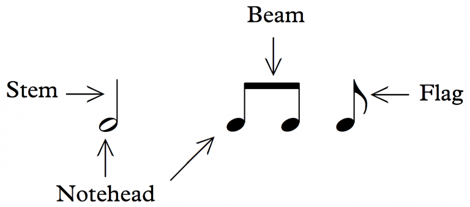
There are many common note values in Western musical notation. Note values are hierarchical; in other words, their lengths are defined relative to one another. Each note value can be divided into two smaller values, as seen in Example 2. Just as a whole pizza divides into two halves, four quarters, eight eighths, etc., a whole note divides into two half notes, four quarter notes, eight eighth notes, and so on.西方记谱法里有很多常见的音符时值。音符时值是分层级的，也就是说，它们的长短是相对彼此来定义的。每种音符时值都可以分成两个更小的时值，见例 2。就像一整张披萨可以分成两个二分之一、四个四分之一、八个八分之一……一个全音符可以分成两个二分音符、四个四分音符、八个八分音符，依此类推。
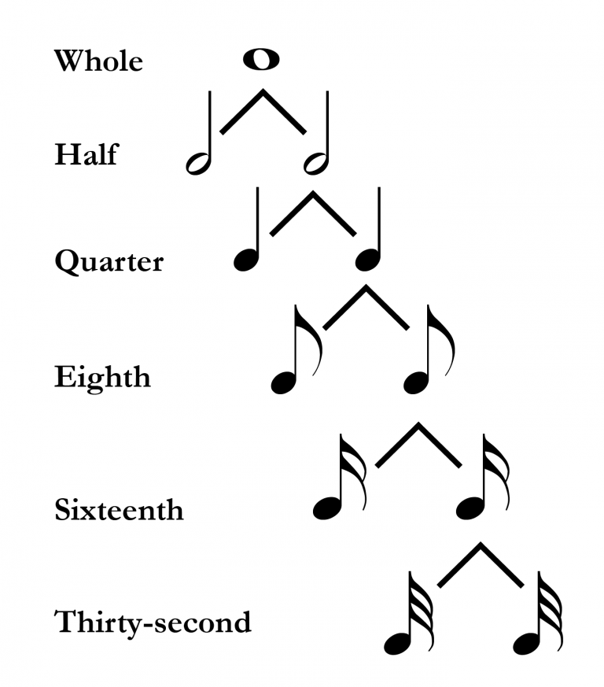
Pay special attention to these aspects of Example 2:特别留意例 2 里的这几点：
- Noteheads can be filled in (black) or unfilled (white); quarter notes and shorter durations are filled in.符头可以是实心的（黑）或空心的（白）；四分音符及更短的时值是实心的。
- Unfilled noteheads may or may not have a stem, but filled noteheads always have stems.空心符头可能有符干，也可能没有；但实心符头一定有符干。
- Flags are only added to the stems of filled noteheads.符尾只加在实心符头的符干上。
Additionally, there are three ways to decrease a note's value by half:另外，有三种办法能把一个音符的时值减半：
- Adding a stem to a note (i.e., whole to half)给音符加符干（比如全音符变二分音符）
- Filling in a notehead (i.e., half to quarter)把符头涂实（比如二分音符变四分音符）
- Adding a flag (i.e., quarter to eighth or eighth to sixteenth)加一条符尾（比如四分音符变八分音符，或八分音符变十六分音符）
You can practice note values in the following equivalency exercise:可以在下面这个等值练习里练音符时值：
Open Music Theory privileges the North American names for note values, but it’s worth being familiar with the British names as well. The table below provides these names.Open Music Theory 优先使用北美的音符时值名称，但英式名称也值得了解。下表列出了这些名称。
| Symbol符号 | American name美式名称 | British name英式名称 |
|---|---|---|
| 𝅝𝅝 | Whole note全音符（whole note） | Semibrevesemibreve |
| 𝅗𝅥𝅗𝅥 | Half note二分音符（half note） | Minimminim |
| 𝅘𝅥𝅘𝅥 | Quarter note四分音符（quarter note） | Crotchetcrotchet |
| 𝅘𝅥𝅮𝅘𝅥𝅮 | Eighth note八分音符（eighth note） | Quaverquaver |
| 𝅘𝅥𝅯𝅘𝅥𝅯 | Sixteenth note十六分音符（sixteenth note） | Semiquaversemiquaver |
Note values shorter than the sixteenth note (thirty-second note, sixty-fourth note, etc.) are created by adding extra flags. You may run into one additional, less common note value called the double whole note (breve in British English; Example 3). Double whole notes are sometimes notated with only one line on either side of the notehead. In older musical notation styles, the notehead appears more square than oval. Double whole notes divide into whole notes (i.e., two whole notes make up one double whole note).比十六分音符更短的时值（三十二分音符、六十四分音符等）靠加更多的符尾得到。你可能还会碰到一种不太常见的时值，叫倍全音符（英式叫 breve；例 3）。倍全音符有时只在符头两边各画一条竖线。在较老的记谱风格里，它的符头更方，不那么椭圆。倍全音符分成全音符（也就是两个全音符合起来是一个倍全音符）。
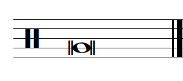
Open Music Theory · 节奏的记谱（Notating Rhythm）。原文作者：Mark Gotham; Chelsey Hamm; and Bryn Hughes。Open Music Theory, Version 2，CC BY-SA 4.0。中文为本站翻译，以英文原文为准。图片版权：Noteheads, Stem, Beam, Flag © Bryn Hughes is licensed under a CC BY-SA (Attribution ShareAlike) license；Rhythmic Values © OMT 1st Edition is licensed under a CC BY-SA (Attribution ShareAlike) license；A Double Whole Note © Chelsey Hamm is licensed under a CC BY-SA (Attribution ShareAlike) license；Rest Values © OMT 1st Edition is licensed under a CC BY-SA (Attribution ShareAlike) license；Breve Rest © Chelsey Hamm is licensed under a CC BY-SA (Attribution ShareAlike) license；Dotted Note Values © OMT 1st Edition is licensed under a CC BY-SA (Attribution ShareAlike) license
休止符时值Rest ValuesOMT · 节奏的记谱
Rest Values休止符时值
Broadly speaking, rests refer to the duration of silences in music. Each hierarchical note value has a corresponding rest value, as seen in Example 4. Like note values, each rest value can be divided into two smaller values. Several additional aspects of Example 4 should be noted:大体上说，休止符指音乐中沉默持续的时长。每种分层级的音符时值都有对应的休止符时值，见例 4。和音符时值一样，每种休止符时值都可以分成两个更小的时值。例 4 还有几点要注意：
- Notice that a whole rest hangs down from a line while a half rest sits on top of a line. It may be helpful to think of a whole rest as “heavier” than a half rest to remember that it hangs down; likewise, a half rest resembles a top hat, so you can think of it as sitting on top of a line as if on a person’s head.注意全休止符是挂在线下面的，二分休止符是坐在线上面的。可以把全休止符想成比二分休止符“更重”，所以往下挂；二分休止符长得像一顶礼帽，可以想成它像戴在人头上一样坐在线上。
- Practice drawing quarter rests carefully; many students find them difficult to draw.四分休止符要认真练着画，很多学生觉得它难画。
- Adding a flag to a rest (i.e., eighth to sixteenth) decreases a rest's duration by half.给休止符加一条符尾（比如八分休止符变十六分休止符），时值减半。
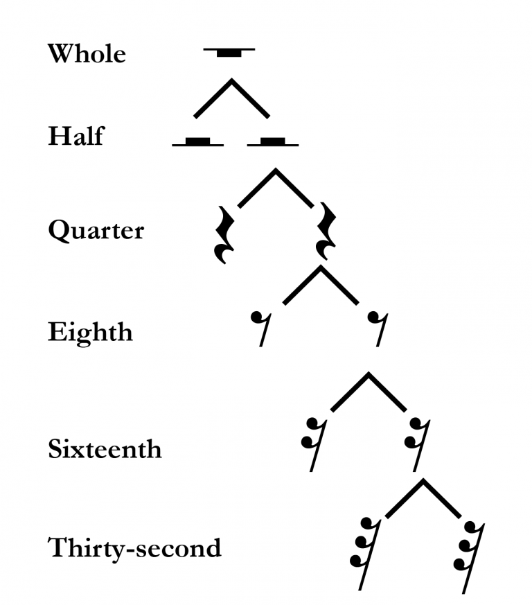
Although rare, you may run across a breve rest (Example 5). A breve rest is equivalent in length to two whole rests. It looks like a filled-in box and appears on the second space from the top.倍全休止符虽然少见，但你可能会碰到（例 5）。一个倍全休止符等于两个全休止符的长度。它看起来像一个涂实的方块，位于从上往下数第二个间。
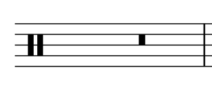
You can practice note and rest values in the following exercise:可以在下面这个练习里练音符和休止符时值：
You can practice with note and rest values in the following equivalency exercise:可以在下面这个等值练习里练音符和休止符时值：
Open Music Theory · 节奏的记谱（Notating Rhythm）。原文作者：Mark Gotham; Chelsey Hamm; and Bryn Hughes。Open Music Theory, Version 2，CC BY-SA 4.0。中文为本站翻译，以英文原文为准。图片版权：Noteheads, Stem, Beam, Flag © Bryn Hughes is licensed under a CC BY-SA (Attribution ShareAlike) license；Rhythmic Values © OMT 1st Edition is licensed under a CC BY-SA (Attribution ShareAlike) license；A Double Whole Note © Chelsey Hamm is licensed under a CC BY-SA (Attribution ShareAlike) license；Rest Values © OMT 1st Edition is licensed under a CC BY-SA (Attribution ShareAlike) license；Breve Rest © Chelsey Hamm is licensed under a CC BY-SA (Attribution ShareAlike) license；Dotted Note Values © OMT 1st Edition is licensed under a CC BY-SA (Attribution ShareAlike) license
附点与连音线Dots and tiesOMT · 节奏的记谱
Dots and ties附点与连音线
Dots and ties allow durations to be lengthened. A dot is written immediately after a note or rest, and it increases its duration by half (Example 6). For example, a quarter note is equivalent in duration to two eighth notes; therefore, a dotted quarter note would be equivalent to three eighth notes. Similarly, a whole note is equivalent to two half notes, so a dotted whole note would be equivalent to three half notes.附点和连音线都能延长时值。附点紧跟在音符或休止符后面，让时值增加一半（例 6）。比如一个四分音符等于两个八分音符，那么附点四分音符就等于三个八分音符。同理，一个全音符等于两个二分音符，附点全音符就等于三个二分音符。
Multiple dots can be added to a duration, with each subsequent dot adding half the duration of the previous one. For example, a double-dotted quarter note (i.e., a quarter note with two dots) is equivalent in duration to a quarter note, eighth note, and sixteenth note added together. In other words, a double-dotted note is 1¾ the duration of the original note.一个时值上可以加好几个附点，每个后加的附点增加前一个附点时值的一半。比如复附点四分音符（带两个附点的四分音符）等于一个四分音符、一个八分音符和一个十六分音符加起来。换句话说，复附点音符是原音符时值的 1¾ 倍。
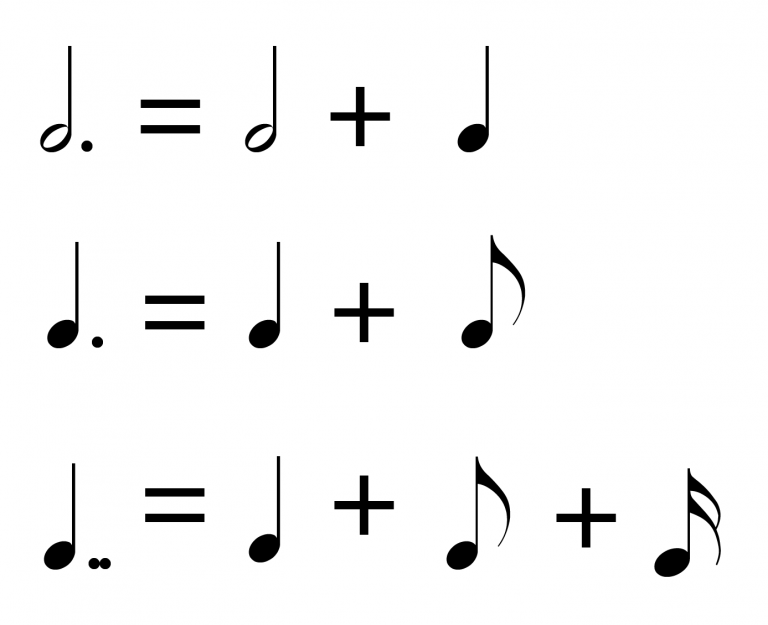
You can practice with dotted note and rest values in the following equivalency exercise:可以在下面这个等值练习里练附点音符和附点休止符：
A tie is a curved line that connects two or more notes with the same pitch. (Ties are never used with rests.) Tied-to notes are not rearticulated. In other words, ties are used to combine the durations of multiple notes. The tie connecting the first two notes in Example 7 indicates that, when these half and quarter notes are played or sung, the quarter note should not be articulated; in other words, the first note should be held for the duration of three quarter notes instead of two. Another way to write this duration is as a dotted half note.连音线是一条弧线，连接两个或更多同音高的音符。（休止符从不用连音线。）被连过去的音不重新发音。换句话说，连音线用来把几个音符的时值合起来。例 7 里连接前两个音的连音线表示：唱或奏这个二分音符和四分音符时，四分音符不要再发音；也就是说，第一个音要持续三个四分音符的长度，而不是两个。这个时值的另一种写法是附点二分音符。
Example 7. A tie connects the first two notes.例 7. 连音线连接前两个音。
You would be correct to think that a tie looks like a slur (see Other Aspects of Notation). The difference between the two is that slurs connect notes of different pitches and indicate to play or sing the notes tenuto, while ties connect notes of the same pitch to create a note with a longer duration.你会觉得连音线看起来像圆滑线（见 Other Aspects of Notation），这没错。两者的区别是：圆滑线连接不同音高的音，表示要以保持音（tenuto）的方式唱或奏；连音线连接同音高的音，造出一个更长的时值。
Open Music Theory · 节奏的记谱（Notating Rhythm）。原文作者：Mark Gotham; Chelsey Hamm; and Bryn Hughes。Open Music Theory, Version 2，CC BY-SA 4.0。中文为本站翻译，以英文原文为准。图片版权：Noteheads, Stem, Beam, Flag © Bryn Hughes is licensed under a CC BY-SA (Attribution ShareAlike) license；Rhythmic Values © OMT 1st Edition is licensed under a CC BY-SA (Attribution ShareAlike) license；A Double Whole Note © Chelsey Hamm is licensed under a CC BY-SA (Attribution ShareAlike) license；Rest Values © OMT 1st Edition is licensed under a CC BY-SA (Attribution ShareAlike) license；Breve Rest © Chelsey Hamm is licensed under a CC BY-SA (Attribution ShareAlike) license；Dotted Note Values © OMT 1st Edition is licensed under a CC BY-SA (Attribution ShareAlike) license
单拍子与拍号Simple Meter and Time SignaturesOMT · 单拍子与拍号
Simple Meter and Time Signatures单拍子与拍号
- A beat is a pulse in music that regularly recurs.拍是音乐里有规律地反复出现的脉动。
- Simple meters are meters in which the beat divides into two, and then further subdivides into four.单拍子是每拍分成两份、再细分成四份的拍子。
- Duple meters have groupings of two beats, triple meters have groupings of three beats, and quadruple meters have groupings of four beats.二拍子两拍一组，三拍子三拍一组，四拍子四拍一组。
- There are different conducting patterns for duple, triple, and quadruple meters.二拍子、三拍子、四拍子各有不同的指挥图式。
- A measure is equivalent to one group of beats (duple, triple, or quadruple). Measures are separated by bar lines.一个小节等于一组拍（两拍、三拍或四拍一组）。小节之间用小节线隔开。
- Time signatures in simple meters express two things: how many beats are contained in each measure (the top number), and the beat unit (the bottom number), which refers to the note value that is the beat.单拍子的拍号表达两件事：每小节有几拍（上面的数字），以及拍单位（下面的数字），即以哪种音符为一拍。
- A beam visually connects notes together, grouping them by beat. Beaming changes in different time signatures.符杠在视觉上把音符连在一起，按拍分组。不同拍号里符杠的连法不一样。
- Notes below the middle line on a staff are up-stemmed, while notes above the middle line on a staff are down-stemmed. Flag direction works similarly.五线谱中线以下的音符符干朝上，中线以上的音符符干朝下。符尾的方向也一样。
In Notating Rhythm, we discussed the different rhythmic values of notes and rests. Musicians organize rhythmic values into various meters, which are—broadly speaking—formed as the result of recurrent patterns of accents in musical performances.Notating Rhythm（节奏的记谱）一章讲了音符和休止符的各种节奏时值。音乐家把节奏时值组织成各种节拍；大体上说，节拍来自演奏中反复出现的重音模式。
Open Music Theory · 单拍子与拍号（Simple Meter and Time Signatures）。原文作者：Mark Gotham; Chelsey Hamm; and Kris Shaffer。Open Music Theory, Version 2，CC BY-SA 4.0。中文为本站翻译，以英文原文为准。
术语TerminologyOMT · 单拍子与拍号
Terminology术语
Listen to the following performance by the contemporary musical group Postmodern Jukebox ( Example 1). They are performing a cover of the song "Wannabe" by the Spice Girls (originally released in 1996). Beginning at 0:11, it is easy to tap or clap along to this recording. What you are tapping along to is called a beat—a pulse in music that regularly recurs.听听当代乐团 Postmodern Jukebox 的这段演出（例 1）。他们翻唱的是辣妹组合（Spice Girls）的“Wannabe”（原版发行于 1996 年）。从 0:11 开始，很容易跟着录音点脚或拍手。你跟着点的东西就叫拍——音乐里有规律地反复出现的脉动。
Example 1. A cover of "Wannabe" performed by Postmodern Jukebox; listen starting at 0:11.例 1. Postmodern Jukebox 翻唱的“Wannabe”；从 0:11 开始听。
Example 1 is in a simple meter: a meter in which the beat divides into two, and then further subdivides into four. You can feel this yourself by tapping your beat twice as fast; you might also think of this as dividing your beat into two smaller beats.例 1 是单拍子：每拍分成两份，再细分成四份。你可以自己感受一下：用两倍的速度去点拍；也可以把它想成把每一拍分成两个更小的拍。
Different numbers of beats group into different meters. Duple meters contain beats that are grouped into twos, while triple meters contain beats that are grouped into threes, and quadruple meters contain beats that are grouped into fours.拍数不同，组成的拍子也不同。二拍子的拍两个一组，三拍子的拍三个一组，四拍子的拍四个一组。
Open Music Theory · 单拍子与拍号（Simple Meter and Time Signatures）。原文作者：Mark Gotham; Chelsey Hamm; and Kris Shaffer。Open Music Theory, Version 2，CC BY-SA 4.0。中文为本站翻译，以英文原文为准。
拍号Time SignaturesOMT · 单拍子与拍号
Time Signatures拍号
In Western musical notation, beat groupings (duple, triple, quadruple, etc.) are shown using bar lines, which separate music into measures (also called bars), as shown in Example 8. Each measure is equivalent to one beat grouping.在西方记谱法里，拍的分组（两拍、三拍、四拍等）用小节线表示，小节线把音乐分成一个个小节（英文也叫 bars），见例 8。每个小节等于一组拍。
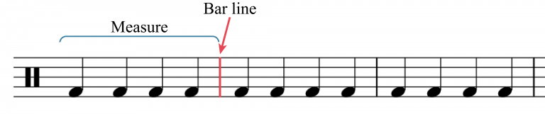
In simple meters, time signatures (also called meter signatures) express two things: 1) how many beats are contained in each measure, and 2) the beat unit (which note value gets the beat). Time signatures are expressed by two numbers, one above the other, placed after the clef (Example 9).在单拍子里，拍号（英文也叫 meter signatures）表达两件事：1）每小节有几拍；2）拍单位（以哪种音符为一拍）。拍号由上下叠放的两个数字组成，写在谱号后面（例 9）。
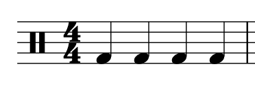
A time signature is not a fraction, though it may look like one; note that there is no line between the two numbers. In simple meters, the top number of a time signature represents the number of beats in each measure, while the bottom number represents the beat unit.拍号看起来像分数，但它不是分数；注意两个数字之间没有横线。在单拍子里，拍号上面的数字表示每小节的拍数，下面的数字表示拍单位。
In simple meters, the top number is always 2, 3, or 4, corresponding to duple, triple, or quadruple beat patterns. The bottom number is usually one of the following:在单拍子里，上面的数字总是 2、3 或 4，对应两拍、三拍、四拍一组。下面的数字通常是下列之一：
- 2, which means the half note gets the beat.2，表示以二分音符为一拍。
- 4, which means the quarter note gets the beat.4，表示以四分音符为一拍。
- 8, which means the eighth note gets the beat.8，表示以八分音符为一拍。
You may also see the bottom number 16 (the sixteenth note gets the beat) or 1 (the whole note gets the beat) in simple meter time signatures.单拍子的拍号里，下面的数字也可能是 16（以十六分音符为一拍）或 1（以全音符为一拍）。
There are two additional simple meter time signatures, which are 𝄴 (common time) and 𝄵 (cut time). Common time is the equivalent of 4/4 (simple quadruple—four beats per measure), while cut time is the equivalent of 2/2 (simple duple—two beats per measure).另外还有两个单拍子拍号：𝄴（common time，普通拍子）和 𝄵（cut time，二二拍）。𝄴 等于 4/4（单四拍子，每小节四拍），𝄵 等于 2/2（单二拍子，每小节两拍）。
You can practice categorizing simple meter time signatures in the following exercise:可以在下面这个练习里给单拍子拍号分类：
Open Music Theory · 单拍子与拍号（Simple Meter and Time Signatures）。原文作者：Mark Gotham; Chelsey Hamm; and Kris Shaffer。Open Music Theory, Version 2，CC BY-SA 4.0。中文为本站翻译，以英文原文为准。图片版权：Measures and Bar Lines © Nathaniel Mitchell is licensed under a CC BY-SA (Attribution ShareAlike) license；Time Signature © Chelsey Hamm is licensed under a CC BY-SA (Attribution ShareAlike) license；Pickup Notes © Megan Lavengood is licensed under a CC BY-SA (Attribution ShareAlike) license；Notes Without Beams © Mark Gotham is licensed under a CC BY-SA (Attribution ShareAlike) license；Beaming Beat Unit © Megan Lavengood is licensed under a CC BY-SA (Attribution ShareAlike) license；Stemming © Chelsey Hamm is licensed under a CC BY-SA (Attribution ShareAlike) license；Flag Direction © Chelsey Hamm is licensed under a CC BY-SA (Attribution ShareAlike) license；Multi-Measure Rest © Chelsey Hamm is licensed under a CC BY-SA (Attribution ShareAlike) license；Ties Clarify Beat © Mark Gotham is licensed under a CC BY-SA (Attribution ShareAlike) license
单拍子的数拍Counting in Simple MeterOMT · 单拍子与拍号
Counting in Simple Meter单拍子的数拍
Counting rhythms aloud is important for musical performance; as a singer or instrumentalist, you must be able to perform rhythms that are written in Western musical notation. Conducting while counting rhythms is highly recommended and will help you to keep a steady tempo. Please note that your instructor may employ a different counting system. Open Music Theory privileges American traditional counting, but this is not the only method.把节奏大声数出来对演奏很重要：不论唱歌还是演奏乐器，你都得能把西方记谱法写下的节奏奏出来。强烈建议一边数节奏一边打指挥图式，这能帮你保持稳定的速度。请注意，你的老师可能用别的数拍法。Open Music Theory 优先采用美国传统数法，但这不是唯一的方法。
Example 10 shows a rhythm in a 4/4 time signature, which is a simple quadruple meter. This time signature means that there are four beats per measure (the top 4) and that the quarter note gets the beat (the bottom 4).例 10 是一段 4/4 拍的节奏，4/4 是单四拍子。这个拍号表示每小节四拍（上面的 4），以四分音符为一拍（下面的 4）。
- In each measure, each quarter note gets a count, expressed with Arabic numerals—"1, 2, 3, 4."每个小节里，每个四分音符数一个数，用阿拉伯数字表示——“1、2、3、4”。
- When notes last longer than one beat (such as a half or whole note in this example), the count is held over multiple beats. Beats that are not counted out loud are written in parentheses.当音符长于一拍（比如这个例子里的二分音符和全音符），一个数要延续好几拍。不大声数出来的拍写在括号里。
- When the beat in a simple meter is divided into two, the divisions are counted aloud with the syllable “and,” which is usually notated with the plus sign (+). So, if the quarter note gets the beat, the second eighth note in each beat would be counted as “and.”单拍子里的拍一分为二时，后一半用音节“and”来数，通常记作加号（+）。所以如果以四分音符为一拍，每拍的第二个八分音符就数“and”。
- Further subdivisions at the sixteenth-note level are counted as “e” (pronounced as a long vowel, as in the word “see”) and “a” (pronounced “uh”). At the thirty-second-note level, further subdivisions add the syllable “ta” in between each of the previous syllables.再细分到十六分音符时，用“e”（读长音，像英文 see 里的那个音）和“a”（读作“uh”）来数。到三十二分音符时，在前面每两个音节之间再加一个“ta”。
Example 10. Rhythm in 4/4 time.例 10. 4/4 拍的节奏。
Simple duple meters have only two beats and simple triple meters have only three, but the subdivisions are counted the same way (Example 11).单二拍子每小节只有两拍，单三拍子只有三拍，但细分的数法一样（例 11）。
Example 11. Simple duple meters have two beats per measure; simple triple meters have three.例 11. 单二拍子每小节两拍；单三拍子每小节三拍。
Like with notes that last for two or more beats, beats that are not articulated because of rests, ties, and dots are also not counted out loud. These beats are usually written in parentheses, as shown in Example 12:和持续两拍或更长的音符一样，因为休止符、连音线和附点而没有发音的拍也不大声数出来。这些拍通常写在括号里，见例 12：
Example 12. Beats that are not counted out loud are put in parentheses.例 12. 不大声数出来的拍放在括号里。
When an example begins with a pickup note (anacrusis), your count will not begin on "1," as shown in Example 13. An anacrusis is counted as the last note(s) of an imaginary measure. When a work begins with an anacrusis, the last measure is usually shortened by the length of the anacrusis. This is demonstrated in Example 13: the anacrusis is one quarter note in length, so the last measure is only three beats long (i.e., it is missing one quarter note).当一段音乐以弱起音（弱起，anacrusis）开始时，数拍就不是从“1”开始，见例 13。弱起被当作一个想象中的小节的最后一个（或几个）音来数。作品以弱起开始时，最后一小节通常会缩短弱起那么长。例 13 就是这样：弱起是一个四分音符长，所以最后一小节只有三拍（也就是少了一个四分音符）。
Open Music Theory · 单拍子与拍号（Simple Meter and Time Signatures）。原文作者：Mark Gotham; Chelsey Hamm; and Kris Shaffer。Open Music Theory, Version 2，CC BY-SA 4.0。中文为本站翻译，以英文原文为准。图片版权：Measures and Bar Lines © Nathaniel Mitchell is licensed under a CC BY-SA (Attribution ShareAlike) license；Time Signature © Chelsey Hamm is licensed under a CC BY-SA (Attribution ShareAlike) license；Pickup Notes © Megan Lavengood is licensed under a CC BY-SA (Attribution ShareAlike) license；Notes Without Beams © Mark Gotham is licensed under a CC BY-SA (Attribution ShareAlike) license；Beaming Beat Unit © Megan Lavengood is licensed under a CC BY-SA (Attribution ShareAlike) license；Stemming © Chelsey Hamm is licensed under a CC BY-SA (Attribution ShareAlike) license；Flag Direction © Chelsey Hamm is licensed under a CC BY-SA (Attribution ShareAlike) license；Multi-Measure Rest © Chelsey Hamm is licensed under a CC BY-SA (Attribution ShareAlike) license；Ties Clarify Beat © Mark Gotham is licensed under a CC BY-SA (Attribution ShareAlike) license
复拍子与拍号Compound Meter and Time SignaturesOMT · 复拍子与拍号
Compound Meter and Time Signatures复拍子与拍号
- Compound meters are meters in which the beat divides into three and then further subdivides into six.复拍子是每拍分成三份、再细分成六份的拍子。
- Duple meters have groupings of two beats, triple meters have groupings of three beats, and quadruple meters have groupings of four beats. You can determine these groupings aurally by listening carefully and tapping along to the beat.二拍子两拍一组，三拍子三拍一组，四拍子四拍一组。仔细听、跟着拍子点，就能用耳朵分辨这些分组。
- There are different conducting patterns for duple, triple, and quadruple meters; these are the same in both compound and simple meters.二拍子、三拍子、四拍子各有不同的指挥图式；复拍子和单拍子的图式相同。
- Time signatures in compound meters express two things: how many divisions are contained in each measure (the top number), and the division unit—which note gets the division (the bottom number).复拍子的拍号表达两件事：每小节有几个分拍（上面的数字），以及分拍单位——以哪种音符为一个分拍（下面的数字）。
- Rhythms in compound meters get different counts based upon their division unit. Beats that are not articulated (because they contain more than one beat or because of ties, rests, or dots) receive parentheses around their counts.复拍子里的节奏按分拍单位采用不同的数法。没有发音的拍（因为音符长于一拍，或者因为连音线、休止符、附点）数字要加括号。
In the previous chapter, Simple Meter and Time Signatures, we explored rhythm and time signatures in simple meters—meters in which the beat divides into two and further subdivides into four. In this chapter, we will learn about compound meters—meters in which the beat divides into three and further subdivides into six.上一章 Simple Meter and Time Signatures（单拍子与拍号）讲了单拍子里的节奏和拍号——单拍子是每拍分成两份、再细分成四份的拍子。本章学复拍子——每拍分成三份、再细分成六份的拍子。
Open Music Theory · 复拍子与拍号（Compound Meter and Time Signatures）。原文作者：Mark Gotham and Chelsey Hamm。Open Music Theory, Version 2，CC BY-SA 4.0。中文为本站翻译，以英文原文为准。
拍号Time SignaturesOMT · 复拍子与拍号
Time Signatures拍号
Measures in compound meters are equivalent to one beat grouping (duple, triple, or quadruple), just as they are in simple meters. However, the two numbers in the time signature express different information for compound meters. The top number of a time signature in compound meter expresses the number of divisions in a measure, while the bottom number expresses the division unit—which note value is the division. Example 1 shows a common compound-meter time signature.复拍子的小节和单拍子一样，等于一组拍（两拍、三拍或四拍一组）。但复拍子拍号里的两个数字表达的信息不同：上面的数字表示一小节里有几个分拍，下面的数字表示分拍单位——以哪种音符为一个分拍。例 1 是一个常见的复拍子拍号。
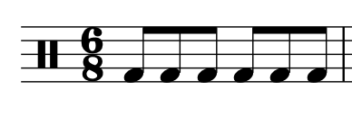
Just like in simple meter, compound-meter time signatures are not fractions (and there is no line between the two numbers), and they are placed after the clef on the staff. In Example 1, the top number (6) means that each measure will contain six divisions; the bottom number (8) means that the eighth note is the division. This means that each measure in this time signature will contain six eighth notes, as you can verify by examining Example 1.和单拍子一样，复拍子拍号也不是分数（两个数字之间没有横线），也写在五线谱的谱号后面。在例 1 里，上面的数字（6）表示每小节有六个分拍；下面的数字（8）表示以八分音符为分拍。所以这个拍号的每小节有六个八分音符，你可以看例 1 验证一下。
In compound meters, the top number is always a multiple of three. Divide this number by three to find the corresponding number of beats in simple meter: top numbers of 6, 9, and 12 correspond to duple, triple, and quadruple meters respectively. In compound meters, the bottom number is usually one of the following:在复拍子里，上面的数字总是 3 的倍数。把它除以 3，就得到对应的单拍子拍数：上面是 6、9、12，分别对应二拍子、三拍子、四拍子。复拍子拍号下面的数字通常是下列之一：
- 8, which means the eighth note receives the division.8，表示以八分音符为分拍。
- 4, which means the quarter note receives the division.4，表示以四分音符为分拍。
- 16, which means the sixteenth note receives the division.16，表示以十六分音符为分拍。
The following table summarizes the six categories of meters that we have covered so far:下表总结了到目前为止讲过的六类拍子：
| Simple or Compound?单拍子还是复拍子？ | Duple, Triple, Quadruple?二拍、三拍还是四拍？ | Beat Grouping拍的分组 | Beat Division拍的划分 | Example Time Signatures拍号举例 |
|---|---|---|---|---|
| Simple单拍子 | Duple二拍子 | 22 | 22 | 2/4 2/8 2/2 2/162/4 2/8 2/2 2/16 |
| Simple单拍子 | Triple三拍子 | 33 | 22 | 3/4 3/8 3/2 3/163/4 3/8 3/2 3/16 |
| Simple单拍子 | Quadruple四拍子 | 44 | 22 | 4/4 4/8 4/2 4/164/4 4/8 4/2 4/16 |
| Compound复拍子 | Duple二拍子 | 22 | 33 | 6/8 6/4 6/166/8 6/4 6/16 |
| Compound复拍子 | Triple三拍子 | 33 | 33 | 9/8 9/4 9/169/8 9/4 9/16 |
| Compound复拍子 | Quadruple四拍子 | 44 | 33 | 12/8 12/4 12/1612/8 12/4 12/16 |
Example 2. Categories of meters.例 2. 拍子的分类。
You can practice compound meter time signatures in the following exercise:可以在下面这个练习里练复拍子拍号：
Open Music Theory · 复拍子与拍号（Compound Meter and Time Signatures）。原文作者：Mark Gotham and Chelsey Hamm。Open Music Theory, Version 2，CC BY-SA 4.0。中文为本站翻译，以英文原文为准。图片版权：Compound Meter Time Signature © Chelsey Hamm is licensed under a CC BY-SA (Attribution ShareAlike) license；Simple and Compound Beaming © Mark Gotham is licensed under a CC BY-SA (Attribution ShareAlike) license
复拍子的数拍Counting in Compound MeterOMT · 复拍子与拍号
Counting in Compound Meter复拍子的数拍
While counting compound meter rhythms, it is recommended that you conduct in order to keep a steady tempo. Because beats in compound meter divide into three, they are always dotted. Beats in compound meter are as follows:数复拍子的节奏时，建议同时打指挥图式，以保持稳定的速度。复拍子的拍分成三份，所以拍总是带附点的。复拍子的拍是这样的：
- If 8 is the bottom number, the beat is a dotted quarter note (equivalent to three eighth notes).下面的数字是 8 时，一拍是附点四分音符（等于三个八分音符）。
- If 4 is the bottom number, the beat is a dotted half note (equivalent to three quarter notes).下面的数字是 4 时，一拍是附点二分音符（等于三个四分音符）。
- If 16 is the bottom number, the beat is a dotted eighth note (equivalent to three sixteenth notes).下面的数字是 16 时，一拍是附点八分音符（等于三个十六分音符）。
In simple meters, the beat divides into two parts, the first accented and the second non-accented. In compound meters, the beat divides into three parts, the first accented and the second and third non-accented. The counts for compound meter are different from simple meter, as demonstrated in Example 3, which is in 6/8.在单拍子里，一拍分成两份，第一份重、第二份轻。在复拍子里，一拍分成三份，第一份重，第二、第三份轻。复拍子的数法和单拍子不同，见例 3，它是 6/8 拍。
Example 3. Counting in a compound duple meter.例 3. 复二拍子的数拍。
In this time signature, each measure has two beats (6÷3=2), indicating duple meter. Each dotted quarter note (the beat) gets a count, which is expressed in Arabic numerals, like in simple meter. For notes that are longer than one beat (such as the dotted half note in the fourth measure of Example 3), the beats that are not counted out loud are still written in parentheses. Divisions are counted using the syllables “la” (first division) and “li” (second division). As the final measure of Example 3 shows, further subdivisions at the sixteenth-note level are counted as “ta,” with the “la” and “li” syllables on the eighth-note subdivisions remaining consistent.这个拍号每小节两拍（6÷3=2），是二拍子。每个附点四分音符（一拍）数一个数，和单拍子一样用阿拉伯数字。长于一拍的音符（比如例 3 第四小节的附点二分音符），不大声数出来的拍仍然写在括号里。分拍用音节“la”（第一个分拍）和“li”（第二个分拍）来数。如例 3 最后一小节所示，再细分到十六分音符时数“ta”，八分音符上的“la”“li”保持不变。
The third measure of Example 3 presents two of the most common compound-meter rhythms with divisions, so make sure to review this measure carefully if you are not familiar with compound meter.例 3 第三小节是复拍子里两个最常见的带分拍的节奏，如果你不熟悉复拍子，一定要仔细看这一小节。
Please note that your instructor may employ a different counting system. Open Music Theory privileges American traditional counting, but this is not the only method.请注意，你的老师可能用别的数拍法。Open Music Theory 优先采用美国传统数法，但这不是唯一的方法。
Example 4 gives examples of rhythms in (a) duple, (b) triple, and (c) quadruple meter. Just as with simple meters, compound duple meters have only two beats, compound triple meters have three beats, and compound quadruple meters have four beats.例 4 给出了（a）二拍子、（b）三拍子、（c）四拍子的节奏。和单拍子一样，复二拍子只有两拍，复三拍子有三拍，复四拍子有四拍。
Example 4. (a) Compound duple has two beats, (b) compound triple has three beats, and (c) compound quadruple has four beats.例 4.（a）复二拍子有两拍，（b）复三拍子有三拍，（c）复四拍子有四拍。
Like in simple meters, beats that are not articulated because of rests and ties are written in parentheses and not counted out loud, as shown in Example 5. However, dotted rhythms do not cause beats to be written in parenthesis the way they do in simple meter, because in compound meter dotted notes receive the beat.和单拍子一样，因为休止符和连音线而没有发音的拍写在括号里、不大声数出来，见例 5。不过附点节奏不会像在单拍子里那样让拍写进括号，因为在复拍子里，附点音符本身就是一拍。
Example 5. Beats that are not counted out loud are put in parentheses.例 5. 不大声数出来的拍放在括号里。
You can practice note/rest equivalencies in both simple and compound meter time signatures in the following exercise:可以在下面这个练习里，在单拍子和复拍子拍号中练音符与休止符的等值关系：
Open Music Theory · 复拍子与拍号（Compound Meter and Time Signatures）。原文作者：Mark Gotham and Chelsey Hamm。Open Music Theory, Version 2，CC BY-SA 4.0。中文为本站翻译，以英文原文为准。
摇摆节奏Swing RhythmsOMT · 摇摆节奏
Swing Rhythms摇摆节奏
- Swing eighths are notated as regular straight eighths but performed unevenly, in a quasi-triplet rhythm where the first note is twice as long as the second.摇摆八分音符记成普通的直八分音符，但奏得不均匀，近似三连音：第一个音大约是第二个音的两倍长。
- Backbeat, a syncopation created through accent on beats 2 and 4 of a quadruple meter, is common in jazz.反拍重音（backbeat）是在四拍子的第 2、4 拍上加重音形成的切分，在爵士乐里很常见。
- Syncopation occurs when the hierarchy of the meter is obscured.节拍的层级被打乱时，就产生了切分。
Jazz has many characteristic uses of rhythm that define it as a genre. This chapter introduces two especially signficant rhythms—swing eighths and the backbeat—and discusses syncopation generally.爵士乐有许多标志性的节奏用法，让它成为一种独特的风格。本章介绍两个特别重要的节奏——摇摆八分音符和反拍重音——并概括地讨论切分。
Open Music Theory · 摇摆节奏（Swing Rhythms）。原文作者：Megan Lavengood。Open Music Theory, Version 2，CC BY-SA 4.0。中文为本站翻译，以英文原文为准。
基本的摇摆律动The Basic Swing GrooveOMT · 摇摆节奏
The Basic Swing Groove基本的摇摆律动
Swing eighths摇摆八分音符
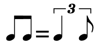
One of the most recognizable features of swing rhythms is swung eighth notes. Swing eighths are performed as uneven eighth notes in a quasi-triplet rhythm, shifting the proportion from 1:1 to, roughly, 2:1—that is, the first eighth note is about twice as long as the second eighth note. This is illustrated with notation in Example 1.摇摆节奏最好认的特征之一，就是摇摆的八分音符。摇摆八分音符奏成不均匀的八分音符，近似三连音，把长短比例从 1:1 变成大约 2:1——也就是第一个八分音符大约是第二个的两倍长。例 1 用记谱说明了这一点。
While in some sense it may be more accurate to notate the eighth notes of a jazz tune as a triplet rhythm as notated in Example 1, imagine how cluttered that would be! Instead, swing eighth notes in jazz are always written as straight eighth notes, and performers are expected to know to swing them.从某种意义上说，把爵士曲子里的八分音符记成例 1 那样的三连音也许更准确，但想想那得多乱！所以爵士乐里的摇摆八分音符总是写成直八分音符，演奏者应当知道要把它们奏得摇摆起来。
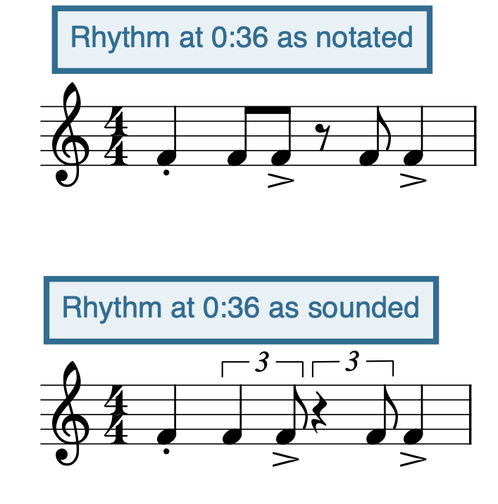
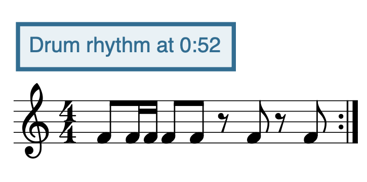
The overture from the musical Anything Goes contains passages with both straight and swing eighths. The first few minutes are swung; this is easiest to hear at 0:36 when all the instruments in the ensemble play swing eighths together (Example 2).While listening, tap along to the swing eighths—and note that the tempo is very brisk, so you'll be tapping quite quickly.音乐剧《Anything Goes》的序曲里既有直八分也有摇摆八分。开头几分钟是摇摆的，在 0:36 乐队所有乐器一起奏摇摆八分时最容易听出来（例 2）。听的时候跟着摇摆八分点拍——注意速度很快，你得点得相当快。
Contrast this with the straight eighths in the middle section of the overture, which begins at 0:52 (Example 3). The feel changes dramatically during this straight section. As you listen, tap along to the straight eighths, which are at a considerably slower tempo than the first part's swing eighths.再对比序曲中段从 0:52 开始的直八分（例 3）。进入这段直八分后，感觉一下子变了。听的时候跟着直八分点拍，它比第一部分的摇摆八分慢得多。
After a quick transition in the trumpets, swing eighths return for the third part of the overture, which begins at 1:39. The swing eighths are audible in the hi-hat cymbal of the drumset.小号奏过一段短短的过渡后，摇摆八分在序曲第三部分（从 1:39 开始）回来了。这时能从鼓组的踩镲上听到摇摆八分。
The triplet rhythm notated in Example 1 is a common way to explain swing, but in reality, the exact ratio of swing eighths varies from piece to piece and from performer to performer. Generally speaking, faster tempos tend to be more straight and slower tempos tend to employ a more dramatic swing. Compare the swing of "Eternal Triangle" by Dizzy Gillespie and "Duet" by Count Basie—the former has a more even swing rhythm, while the latter has a more uneven swing.用例 1 记的三连音来解释摇摆很常见，但实际上，摇摆八分的确切比例因曲而异、因人而异。一般来说，速度越快越接近直八分，速度越慢摇摆越明显。比较一下 Dizzy Gillespie 的“Eternal Triangle”和 Count Basie 的“Duet”：前者的摇摆比较均匀，后者的摇摆更不均匀。
Backbeat反拍重音
The next most significant rhythmic feature of jazz is the backbeat. The backbeat is an accent on beats 2 and 4 of a quadruple meter. This is the opposite of the typical accent structure of classical music, where beats 1 and 3 are usually the most accented. (Beat 1 is still important in jazz, though—that's still usually where chord changes occur and roots of chords are sounded. It just may not be the loudest beat.)爵士乐第二重要的节奏特征是反拍重音（backbeat）：四拍子第 2、4 拍上的重音。这和古典音乐通常的重音结构正好相反，古典音乐里通常第 1、3 拍最重。（不过第 1 拍在爵士乐里仍然重要——和弦通常还是在这里换、和弦根音通常还是在这里出现。它只是未必是最响的那一拍。）
The backbeat and the swing eighth together make up an important part of a standard swing drum beat (Example 4). The backbeat is accented with the closed hi-hat cymbal, while the swing eighths are played on the ride cymbal. Drum beats vary widely and are typically improvised, but these are two components you will find in most jazz drum patterns.反拍重音和摇摆八分合在一起，构成标准摇摆鼓点的重要部分（例 4）。反拍重音用闭合的踩镲来强调，摇摆八分则在叮叮镲（ride）上奏。鼓点千变万化，通常是即兴的，但大多数爵士鼓点里都能找到这两个成分。
Example 4. Standard swing drum beat with swing eighths and a backbeat.例 4. 带摇摆八分和反拍重音的标准摇摆鼓点。
When tapping along with jazz tunes, try tapping along to the backbeat, rather than the downbeat.跟着爵士曲子点拍时，试着点反拍重音（第 2、4 拍），而不是强拍。
Open Music Theory · 摇摆节奏（Swing Rhythms）。原文作者：Megan Lavengood。Open Music Theory, Version 2，CC BY-SA 4.0。中文为本站翻译，以英文原文为准。图片版权：Swung eighths © Megan Lavengood is licensed under a CC BY-SA (Attribution ShareAlike) license；Anything Goes 1 © Megan Lavengood is licensed under a CC BY-SA (Attribution ShareAlike) license；Anything Goes 2 © Megan Lavengood is licensed under a CC BY-SA (Attribution ShareAlike) license
切分SyncopationOMT · 摇摆节奏
Syncopation切分
Before understanding syncopation, it is important to understand meter more generally (refer to the chapters on simple and compound meter). Meter emerges when a series of equally spaced pulses imply a sense of hierarchy. For example, 4/4 time, which most jazz is in, is a series of four quarter notes (equally distant beats) in which beat 1 is most important, beat 3 less important, and beats 2 and 4 least important of all. "Importance" here means that important things happen on beat 1: things like chord changes, key changes, and so on. These important things might also happen on beat 3, but it is less common, and it's relatively unusual to see chord changes on beat 2 or 4.在理解切分之前，先要大致理解节拍（参见单拍子和复拍子两章）。一串等距的脉动暗示出某种层级感时，节拍就出现了。比如大多数爵士乐用的 4/4 拍，是一串四个四分音符（等距的拍），其中第 1 拍最重要，第 3 拍次之，第 2、4 拍最不重要。这里的“重要”是说重要的事发生在第 1 拍：比如换和弦、转调等等。这些事也可能发生在第 3 拍，但不太常见；在第 2 或第 4 拍换和弦就比较少见了。
Syncopation occurs when this sense of hierarchy is subverted in some way. There are many ways to achieve this subversion, and the backbeat is actually one such example. By sounding on beats 2 and 4, but not on beats 1 and 3, the backbeat creates syncopation by accenting the less important beats of the 4/4 meter. Another common jazz syncopation is accenting the second offbeat eighth of an eighth-note pair, as in Example 2 above.这种层级感以某种方式被打破时，就产生了切分。打破的办法有很多，反拍重音其实就是其中之一：只在第 2、4 拍发声、不在第 1、3 拍发声，反拍重音就重读了 4/4 拍里不重要的拍，从而产生切分。爵士乐里另一种常见的切分，是重读一对八分音符里后面那个落在反拍上的八分音符，如上面的例 2。
In addition to accents that obscure the beat, syncopation can also be created through rests and ties: for example, avoiding downbeats when beginning melodic lines. An example of syncopation created with rests and ties is in Example 5.除了用重音模糊拍子，休止符和连音线也能造成切分：比如旋律句子开头时避开强拍。例 5 就是用休止符和连音线造成切分的例子。
Example 5. Syncopation in Carla Bley, "Donkey" (1976).例 5. Carla Bley《Donkey》（1976）里的切分。
Open Music Theory · 摇摆节奏（Swing Rhythms）。原文作者：Megan Lavengood。Open Music Theory, Version 2，CC BY-SA 4.0。中文为本站翻译，以英文原文为准。
流行音乐里的节奏与节拍Rhythm and Meter in Pop MusicOMT · 流行音乐里的节奏与节拍
Rhythm and Meter in Pop Music流行音乐里的节奏与节拍
- Straight syncopation can be understood as taking a square rhythm and shifting some of the notes early by half the duration.直切分可以理解为：拿一串方方正正的节奏，把其中一些音提前该时值的一半。
- Other syncopations are derived from dividing a unit into nearly even parts.另一些切分来自把一个单位分成几乎相等的几份。
- A particularly common nearly even syncopation is the tresillo pattern of 3+3+2.一种特别常见的“几乎相等”的切分是 3+3+2 的 tresillo 节奏型。
The Drumbeats chapter contains more details on rhythm within drum parts.Drumbeats（鼓点）一章有更多关于鼓声部节奏的内容。
Open Music Theory · 流行音乐里的节奏与节拍（Rhythm and Meter in Pop Music）。原文作者：Bryn Hughes; Megan Lavengood; and Kris Shaffer。Open Music Theory, Version 2，CC BY-SA 4.0。中文为本站翻译，以英文原文为准。
直切分Straight SyncopationOMT · 流行音乐里的节奏与节拍
Straight Syncopation直切分
In contemporary pop/rock music, syncopation typically involves taking a series of notes of equal durations, cutting the duration of the first note in half, and shifting the remaining notes early by that half duration.在当代流行/摇滚音乐里，切分通常是这样做的：拿一串时值相等的音，把第一个音的时值砍掉一半，剩下的音都提前这半个时值。
For example, a series of four quarter notes, all sounding on the beat, can be transformed in this way by making the first note into an eighth note and sounding each successive quarter note one eighth note early—all on the offbeats.比如一串四个四分音符，都在拍上发声；把第一个音变成八分音符，后面每个四分音符都提前一个八分音符发声——于是全都落在反拍（offbeat）上。
This process can occur on any metrical level. The unit of syncopation (the duration of the first note, and the amount of shift applied to the following notes) is always half the duration of the straight notes. All of the following syncopations are relatively common in contemporary pop/rock music:这个过程可以发生在任何一个节拍层级上。切分的单位（第一个音的时值，也是后面各音提前的量）总是这串“直”音时值的一半。下面这些切分在当代流行/摇滚音乐里都比较常见：
- If the duration of the series of “straight” notes is two beats, they will be syncopated by changing the first note to a single beat and shifting each of the other notes early by a beat.如果这串“直”音每个长两拍，切分时就把第一个音改成一拍，其余每个音提前一拍。
- If the duration of the straight notes is one beat, they will be syncopated by a division (one half beat in simple meter).如果直音每个长一拍，就提前一个分拍（单拍子里是半拍）来切分。
- If the straight notes are each divisions, they will be syncopated by shifting each note by a subdivision.如果直音每个是一个分拍，就把每个音提前一个细分来切分。
As a convention, when we take a series of notes that each have a duration of one beat and shift them early by half a beat, we will call that beat-level syncopation (Example 1). When we take a series of notes that each have a duration of one division and shift them early by a subdivision, we will call that division-level syncopation.按惯例，把一串每个一拍长的音各提前半拍，我们叫它拍级切分（例 1）。把一串每个一个分拍长的音各提前一个细分，我们叫它分拍级切分。
Example 1. Straight syncopation moves the attacks forward by half the value of the metric level.例 1. 直切分把起音提前该节拍层级时值的一半。
Transcribing straight syncopations扒直切分节奏
Straight syncopated rhythms are easily identified by the frequently occurring off-beat rhythms. For example, if you listen to a song and conduct or tap the counting pulse, you may notice several notes in a row that are articulated between these pulses, with no notes articulated right on a pulse—this indicates syncopation.直切分节奏很好认，特点是频繁出现反拍节奏。比如你听一首歌、跟着数拍的脉动打拍子或点拍，可能会发现连续好几个音都落在两次脉动之间，没有一个音正好落在脉动上——这就说明有切分。
Once you identify a syncopated passage—which may only involve two or three notes—figure out the metrical level on which the syncopation occurs. For example, in simple meter, if no notes are articulated directly on the counting pulse beats and one note is articulated in between each beat, the syncopation is occurring at the beat level. If no notes are articulated directly on the counting pulse beats and two notes are articulated in between each beat, listen to the passage again while tapping the division. If no notes are articulated directly on the division taps and one note is articulated in between each tap, the syncopation is occuring at the division level.找到一段切分（可能只涉及两三个音）后，判断切分发生在哪个节拍层级。比如在单拍子里，如果没有音正好落在数拍的脉动上，而每两拍之间有一个音，切分就发生在拍级。如果没有音正好落在拍上，而每两拍之间有两个音，就一边点分拍一边再听一遍。如果没有音正好落在分拍点上，而每两次点之间有一个音，切分就发生在分拍级。
Determining the metrical level allows you to identify the durational value of the shift. If the syncopation occurs on the beat level (one note sounding between each counting pulse beat), the value of syncopation is a division: each beat-length note has been shifted one division early. If the syncopation occurs on the division level, the value of syncopation is a subdivision: each division-length note has been shifted one subdivision early.确定了节拍层级，就能确定提前量的时值。如果切分发生在拍级（每两个数拍脉动之间响一个音），切分的值是一个分拍：每个一拍长的音都提前了一个分拍。如果切分发生在分拍级，切分的值是一个细分：每个分拍长的音都提前了一个细分。
Lastly, determine how the syncopated pattern begins. Does the offbeat pattern simply begin offbeat? Or does the pattern begin with two quick notes back-to-back as in Example 1—one short note on the beat followed by the first of the longer syncopated notes?最后，判断这个切分型怎么开头。是直接从反拍开始？还是像例 1 那样以两个紧挨着的快音开头——拍上一个短音，紧接着第一个较长的切分音？
Once you have determined the level of syncopation, the duration of the shift, and whether or not the pattern begins with a truncated onbeat note, the rhythmic pattern should be easy to notate. If, however, you are still having difficulty, try using the lyric syllables and the stress patterns of the lyrics to help you keep track of the individual notes and which ones are on or off the beat. Writing lyrics down before notating the rhythm can be a big help.确定了切分的层级、提前的时值、以及是否以一个被截短的拍上音开头，这个节奏型就很容易记下来了。如果还是觉得难，试着借助歌词的音节和歌词的重读模式，追踪每个音、分清哪些在拍上哪些在拍外。先把歌词写下来再记节奏，会很有帮助。
Open Music Theory · 流行音乐里的节奏与节拍（Rhythm and Meter in Pop Music）。原文作者：Bryn Hughes; Megan Lavengood; and Kris Shaffer。Open Music Theory, Version 2，CC BY-SA 4.0。中文为本站翻译，以英文原文为准。
Tresillo（3+3+2）TresilloOMT · 流行音乐里的节奏与节拍
TresilloTresillo（3+3+2）
Drawing on its roots in African and Cuban musical traditions, another common rhythmic pattern in pop/rock is to divide a beat (or two beats) into three almost-equal groups: for example, dividing a half note into two dotted eighth notes and an eighth note (3+3+2). This pattern approximates a triplet while still maintaining the simple division of beats by 2, 4, 8, etc., creating an experience of something like a “fake triplet.” The term for this rhythmic pattern is tresillo (Example 2). A tresillo pattern can be heard after the opening cuatro solo of “Despacito” by Luis Fonsi and Daddy Yankee (2016) in the bass and bass drum. The tresillo pattern is extremely common, even in pop music that otherwise doesn’t seem to draw on Afro-Cuban music.另一种在流行/摇滚里常见的节奏型源自非洲和古巴的音乐传统：把一拍（或两拍）分成三个几乎相等的组。比如把一个二分音符分成两个附点八分音符和一个八分音符（3+3+2）。这个节奏型近似三连音，同时又保持了拍按 2、4、8 等划分的单拍子结构，听起来有点像“假三连音”。这个节奏型叫 tresillo（例 2）。在 Luis Fonsi 和 Daddy Yankee 的“Despacito”（2016）开头的 cuatro（夸特罗琴）独奏之后，贝斯和底鼓奏的就是 tresillo。即使在看起来并不借鉴非洲-古巴音乐的流行音乐里，tresillo 也极其常见。
Example 2. Tresillo rhythms.例 2. Tresillo 节奏。
The tresillo is actually more common than “real” triplets in most pop/rock genres, but true triplets do occur, so take care to distinguish between the two. “Cathedrals” by Jump, Little Children (1998) juxtaposes both, and it’s an excellent example for practicing performing and identifying tresillo patterns and real triplets. In Example 3, notice that the violins play quarter-note triplets against simple eighth notes in the guitar, but the guitar begins a tresillo accent pattern after the triplets stop.在大多数流行/摇滚风格里，tresillo 其实比“真正的”三连音更常见，但真三连音也会出现，所以要注意区分两者。Jump, Little Children 的“Cathedrals”（1998）把两者并置，是练习演奏和识别 tresillo 与真三连音的绝佳例子。在例 3 里注意：小提琴奏四分音符三连音，对着吉他的普通八分音符；而三连音停下之后，吉他开始奏 tresillo 重音型。
Example 3. “Cathedrals” by Jump, Little Children (1:01).例 3. Jump, Little Children 的“Cathedrals”（1:01）。
While tresillo patterns occur most often in 3+3+2 groupings, 3+2+3 and 2+3+3 are also possible.tresillo 最常见的是 3+3+2 分组，但 3+2+3 和 2+3+3 也有。
The tresillo pattern can be expanded: in Example 4, the 3+3+2 pattern is doubled, resulting in 3+3+3+3+2+2. Nicole Biamonte (2014) refers to this pattern as the double tresillo. In the opening of “Electric Co.” by U2 (1980), the guitar plays subdivisions (sixteenths) grouped 3+3+3+3+2+2, while the kick drum plays straight beats (quarters) under the hi-hat playing straight subdivisions.tresillo 还能扩展：例 4 把 3+3+2 加倍，得到 3+3+3+3+2+2。Nicole Biamonte（2014）把这个节奏型叫作 double tresillo（双 tresillo）。在 U2 的“Electric Co.”（1980）开头，吉他奏的细分（十六分音符）按 3+3+3+3+2+2 分组，底鼓奏直的拍（四分音符），上面的踩镲奏直的细分。
Example 4. The double tresillo.例 4. 双 tresillo。
Open Music Theory · 流行音乐里的节奏与节拍（Rhythm and Meter in Pop Music）。原文作者：Bryn Hughes; Megan Lavengood; and Kris Shaffer。Open Music Theory, Version 2，CC BY-SA 4.0。中文为本站翻译，以英文原文为准。
⚡ 本模块其余配套课程与工具的本地精要 / 平替
- musictheory.net：Note Duration ↗
📖 本地精要（免跳转直接看：musictheory.net 互动图文短课核心提要）
- 该短课用极简五线谱动画演示基础乐理定义（音符时值、拍号、半音全音、大调/小调音阶、音程转位、三/七和弦及罗马数字）。
- 这些核心定义已 100% 转化为电吉他指板视角，嵌在本模块对应的「讲义」与每日「双语精读卡片」中，读完页内卡片即可完全掌握。
- musictheory.net：Simple and Compound Meter ↗
📖 本地精要（免跳转直接看：musictheory.net 互动图文短课核心提要）
- 该短课用极简五线谱动画演示基础乐理定义（音符时值、拍号、半音全音、大调/小调音阶、音程转位、三/七和弦及罗马数字）。
- 这些核心定义已 100% 转化为电吉他指板视角，嵌在本模块对应的「讲义」与每日「双语精读卡片」中，读完页内卡片即可完全掌握。
- JustinGuitar 实用乐理 Grade 2 练习册（指板前 5 品、TAB、和弦图） ↗
📖 本地精要（免跳转直接看：JustinGuitar 实用乐理 Grade 2：前 5 品音名定位、六线谱拍号结合与和弦图拆解）
- 【看和弦图先认根音与三音】任何开放和弦（C/A/G/E/D/Am/Em/Dm）里，决定它是大是小的永远是那颗 3 音（例如 E 和弦 3 弦 1 品 G♯ 抬起空弦 G 即变 Em）。
- 【数拍子口诀】四分音符数 1 2 3 4，八分音符数 1 & 2 & 3 & 4 &，十六分音符数 1 e & a，右手永远像钟摆一样上下匀速摆动。
- Tomo Fujita（伯克利教授：三和弦转位、R&B/Blues 律动、听音与干净演奏） ↗
📖 本地精要（免跳转直接看：Tomo Fujita（伯克利教授）：密排三和弦转位、极简声部连接与右手控制）
- 【Don't Expect, Just Train】不要一上来就扫 6 根弦大横按！用 4–3–2 弦密排三和弦（Close Triads）弹 I–IV–V，坚持“共同音手指不动，其余手指只走 1～2 品”。
- 【动态与消音】好声音 70% 来自不弹的弦有多安静：左手食指尖顶住低一弦、指腹轻触高一弦，右手用拨片尖轻触控制强弱（pp 到 ff），让每个三和弦像管乐组一样干净。
- Soundslice（音画同步 TAB/五线谱，可减速循环扒谱练习） ↗
📖 本地精要（免跳转直接看：Soundslice 音画同步慢放与 A–B 循环扒谱法）
- 【A–B 逐小节锁定】扒快速度独奏时，每次只圈出 1～2 小节降速到 50%～75%（保持原音高），先用嘴跟唱准节奏落点，再在吉他上找到对应把位。
- Songsterr（带回放的 TAB，用户整理，需对照录音） ↗
📖 本地精要（免跳转直接看：Songsterr 在线六线谱防坑指南与本站曲目和声对照）
- 【永远用乐理校验六线谱】网络用户上传的 TAB 经常把同音换到不顺手的弦或写错转位；先看本站内置的「曲目和声级数卡」确认该曲的调性与和弦骨架，再用耳朵核对把位。
- Guthrie Govan《Creative Guitar》Vol. 1 & 2（现代电吉他练习法、动态与调式即兴思维） ↗
📖 本地精要（免跳转直接看：Guthrie Govan《Creative Guitar》：让电吉他发出“人声说话感”的细节）
- 【推弦三要素】① 推弦前想清楚目标音是谁；② 推弦速度决定情绪（快推干脆、慢推挣扎）；③ 推到顶之后再加揉弦，绝不在半路上盲目乱抖。
- 【打破手指机械模进】不要让手指牵着脑子走，尝试“先用嘴哼一句短旋律，再在琴上原封不动弹出来”，这是治愈机械爬音阶的唯一良药。
7. 自测 5 题
先自己答（上琴题要真的弹），再展开看答案。答不上来的，回第 6 节对应的原资料。
概念 13/4 和 6/8 每小节都是 6 个八分音符，区别在哪？各怎么数，跟着点脚每小节点几下？
答案
3/4 是单三拍子：三拍，每拍一个四分音符，分成两个八分（2+2+2），数“1 & 2 & 3 &”，点 3 下，重音在第 1、3、5 个八分音符上。6/8 是复二拍子：两拍，每拍一个附点四分音符，分成三个八分（3+3），数“1 la li 2 la li”，点 2 下，重音在第 1、4 个八分音符上。OMT 的规则：复拍子拍号上面的数字除以 3 才是拍数。
概念 2附点四分音符等于几个八分音符？复附点四分音符呢？在 4/4 里要一个持续 5 拍的音，怎么写？
答案
附点四分 = 3 个八分。复附点四分 = 四分 + 八分 + 十六分，是原时值的 1¾ 倍，也就是 3½ 个八分（OMT Example 6）。5 拍比一小节还长，一个音符写不下，要用连音线跨过小节线：一个全音符连一个四分音符，连过去的那个音不重新弹。
辨析 1swing 的谱面写的是直八分，演奏时为什么不按谱面弹？朋友说“swing 就是三连音前两个连起来，永远是 2:1”，对吗？
答案
谱面写直八分是惯例：如果每个八分都写成三连音，谱面会非常乱，所以写直八分，演奏者看风格就知道要摇摆（OMT）。“三连音前两个连起来”是常用的解释，但不是“永远 2:1”：OMT 说实际比例因曲、因人而异，快的更直，慢的更不均匀，并拿 Dizzy Gillespie 的“Eternal Triangle”和 Count Basie 的“Duet”对比。
辨析 2TAB 为什么常常不够用？它给不了你哪些信息？
答案
普通 TAB 只写弦和品。它通常没有时值（数字之间的距离不代表多长）、没有拍号和重音、没有休止，也没有 swing 之类的风格标记，有的连小节线都没有。补充 所以看 TAB 学歌要对照录音，或者用带符干和回放的谱（Songsterr、Guitar Pro），再自己把节奏数出来。
上琴开第 3 节的节拍器，4/4、80 BPM，勾上“每 4 小节自动换细分”，从四分弹到十六分，嘴里数出来。弹完做一次跟拍测试。
参考标准
换细分时，新细分的第一个音正好落在拍上，不抢也不等。跟拍测试的参考线 补充：平均偏差在 ±20 毫秒以内、波动在 30 毫秒以内就算稳。这只是讲义作者的经验值，更重要的是录音回听：拍子有没有越弹越快。
8. 在歌里听一听
- We Will Rock You（Queen）：跺、跺、拍。跺脚在第 1 拍和它的 &，拍手在第 2 拍；第 3、4 拍再来一遍。拍手正好落在 2、4 拍，就是反拍重音。数“1 & 2，3 & 4”，用闷音扫弦打出来。
- Pride and Joy（Stevie Ray Vaughan）：德州 shuffle，整首都是长–短的律动；原版降半音调弦。先跟录音拍四分，再在 6 弦闷音弹 shuffle 八分，最后加上 E5–E6 根音律动。
- Nothing Else Matters（Metallica）：通常记作 6/8。前奏是空弦琶音 E–G–B–E–B–G（6、3、2、1、2、3 弦），一小节六个八分音符，三个一组。跟着原曲点脚，确认每小节只点两下。
想一想
如果数成 3/4，“1 & 2 & 3 &”，重音会落在第 1、3、5 个音（E、B、B）上；数成 6/8，“1 la li 2 la li”，重音在第 1、4 个音（E、E）上。跟原曲比，哪个更像？
- Happy Birthday（生日快乐）：3/4，从第 3 拍的弱起开始，开头“祝你”是附点八分 + 十六分。第 2 节 ⑨ 有它的 TAB。拍手唱一遍，找出强拍（每小节第 1 拍）落在哪个字上。
答案
“祝你 | 生日快 | 乐”：强拍落在“生”和“乐”上。英文是“Happy | birthday to | you”。因为从弱起开始，最后一小节通常会相应缩短（OMT Example 13）。
和后面模块的连接：G3 开始练耳，每个音程配一首参考曲，节奏数清楚了才能把旋律准确地唱出来；G11 布鲁斯会把 12/8 和 shuffle 用到 12 小节布鲁斯上；G15 扒歌时，“扒直切分节奏”的四个步骤会直接用上。
9. 带去原资料的 3 个问题
读讲义只是搭了骨架。下面三个问题讲义没讲透，答案要到原文里找（「本周」页里有嵌好的原文）。
- 单拍子里，因为休止符、连音线、附点而没有发音的拍，怎么数、怎么写？以弱起开始的曲子，最后一小节为什么会变短？（OMT Simple Meter → Counting in Simple Meter，Example 12、13）
- 复拍子拍号上面的数字表示什么？为什么在复拍子里，附点音符不会让拍写进括号，而在单拍子里会？（OMT Compound Meter → Time Signatures、Counting in Compound Meter）
- 听一首歌时，怎么一步步把一段直切分扒下来？拍级切分和分拍级切分怎么区分？tresillo 和真三连音又怎么区分？（OMT Rhythm and Meter in Pop Music）
读完回到网站，在路线图里勾掉 G2 的第 3、4 步，然后用 /quiz 节奏、拍号与读谱 让 AI 反问你。